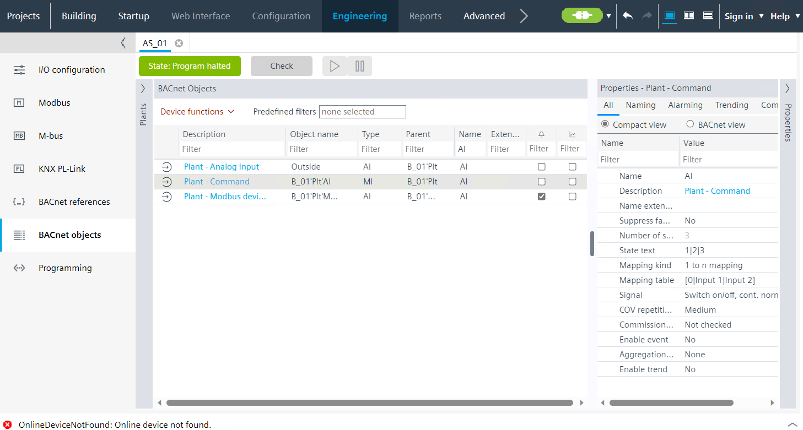

物业批量运营
允许高效编辑对象类型的相同属性。
- Mass properties can only be edited while offline.
- Go to Building > Building structure.
- Right-click the automation station and select Go to engineering.
- Open the BACnet objects task.
- Select the Properties view tab.
- Select the All tab.
- In the Type column of the table in the main working area, add a filter, for example, AI.
- All AI objects are listed in the table.
- Select the objects you want to modify.
- Properties that cannot be modified are hidden, for example, the Name property.
- Properties with the same value are displayed, these properties can be edited.
- Properties with different values are marked with ?. These properties can be edited.
- Select a property and modify the value.
- All selected objects are immediately updated with the new value.
